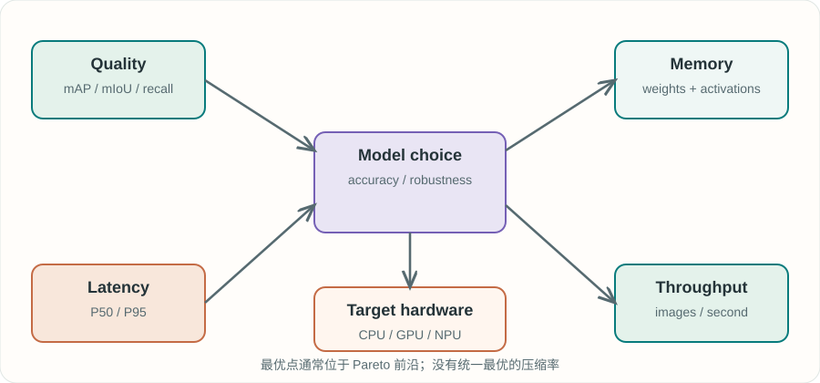
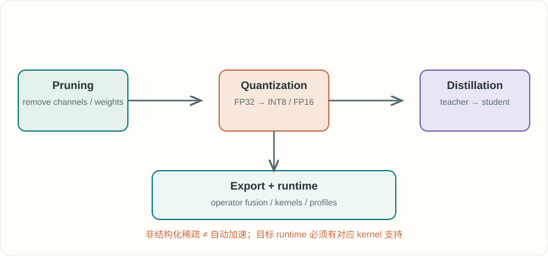

CHAPTER 25 · 模型压缩与部署
模型压缩与部署：从浮点权重到真实推理
一个模型的论文精度并不能回答它能否在目标设备上运行。部署优化要同时考虑准确率、尾延迟、吞吐、峰值内存、能耗和算子支持。本章把结构化剪枝、量化、知识蒸馏、ONNX 导出与 TensorRT 构建串成可验证的工程路径，并区分模型文件变小与真实推理变快。
先定义部署目标：质量、延迟、内存与吞吐
部署优化不是把 FLOPs 或参数量单独压到最低。一个模型可能参数少却因算子不受支持而频繁回退到 CPU；也可能 INT8 engine 更快，但精度下降集中在小目标或少数类别。真实目标通常是多约束：达到最低任务质量，同时满足 P95 延迟、峰值显存/内存、并发吞吐、功耗和模型包体限制。
先写清负载：输入分辨率、batch size、动态尺寸范围、并发数、预处理与后处理是否计入、目标硬件型号、功率模式和 runtime 版本。只有这些条件一致，优化前后的对比才有意义。

剪枝：稀疏权重不等于硬件加速
非结构化剪枝把单个权重置零，可能提高稀疏度并减少某些稀疏格式的存储，但普通 dense GEMM / convolution kernel 仍可能按完整矩阵计算。没有稀疏 kernel、索引格式和硬件支持时，零值并不自动跳过乘加。
结构化剪枝删除整个输出通道、卷积核或层，使相邻层的张量形状真实变小，通常更容易被普通 dense runtime 利用。剪掉一个 Conv 的输出通道，还必须同步剪掉后续层对应的输入通道、BatchNorm 参数和残差分支连接。Network Slimming 的代表思路是在 BatchNorm scale 上加入稀疏约束，再按通道重要性筛选并微调；这和对任意权重简单阈值化不是一回事。

剪枝之后必须 fine-tune 或重新训练，并在目标 runtime 上测真实 latency。报告稀疏率、参数量和 FLOPs 时，还要同时报告模型文件大小、实际 kernel 利用率和端到端推理时间。
量化：scale、zero-point 与校准
量化把浮点值映射到有限整数格点。仿射量化用 scale s 和 zero-point z 表示实数 0 在整数域的位置：先将 x/s 加上 z，四舍五入并 clip 到整数范围；反量化再用 s(q−z) 近似原值。对称量化通常把 zero-point 固定为 0；非对称量化允许零点偏移，更适合分布不围绕 0 对称的激活值。
s > 0；scale 可按整个张量或按输出通道分别估计。

PTQ（Post-Training Quantization）在训练完成后使用代表性 calibration set 估计激活范围；动态量化则在推理时计算部分激活的量化参数。QAT（Quantization-Aware Training）在训练前向中模拟量化/反量化误差，让模型适应低精度表示。还要区分 per-tensor 与 per-channel scale，以及权重-only 和权重+激活量化。
PyTorch 量化 API 正在向 torchao 与 PT2E 工作流集中。旧版 eager / FX graph mode API 仍可能出现在历史教程里，但官方文档已建议迁移到 torchao PT2E；新项目应以当前后端和支持矩阵为准，不要照抄过时的 torch.quantization 示例。
知识蒸馏：教师软目标与温度
知识蒸馏把较大教师模型的输出分布作为学生模型的软监督。温度 T 大于 1 时，softmax 分布更平滑，非最大类别之间的相对概率也能提供“哪些类别更相似”的信息。学生同时学习教师软目标与真实 hard label；常见目标是温度缩放后的 KL divergence 与真实标签交叉熵的加权和。
T² 用于抵消高温软目标梯度随温度增大而缩小的量级；实现时要核对 KL 输入的 log-probability 方向。
蒸馏也可以对齐中间特征、attention map 或关系结构，但这些是不同的监督设计。学生模型并不会因为“学教师”就自动继承教师全部能力；教师偏差、标签噪声和学生容量都会限制蒸馏效果。
ONNX 导出：先验证计算图和动态形状
ONNX 是一种计算图交换格式，不是加速器本身。导出前先把模型切到 eval()，固定预处理和输入输出契约，准备代表性 example inputs；导出后使用 ONNX checker 和目标 runtime 对比数值。算子覆盖、动态维度、外部权重文件和 opset 版本都可能影响可移植性。
当前 PyTorch 的 torch.onnx.export 推荐基于 dynamo=True 的 torch.export 路径；动态输入形状应通过 dynamic_shapes 描述。dynamic_axes 属于旧导出路径的参数，不应与 dynamo=True 的新接口混为一谈。导出成功不代表目标执行后端支持每个算子，也不代表输出与 PyTorch 数值一致。
实际检查至少包含：输出 shape 和 dtype、最大绝对/相对误差、不同 batch size 和图像尺寸、预处理一致性、后处理阈值、模型外部数据文件、目标 runtime 的算子支持，以及 fallback 是否发生。
TensorRT：精度策略、Q/DQ 与 optimization profile
TensorRT 根据网络图、目标 GPU 和输入形状选择融合与 kernel tactic，构建可执行 engine。动态 shape 需要 optimization profile 指定 min、opt、max 三组形状：min/max 定义运行时合法范围，opt 是构建时用于选择 tactic 的代表形状。profile 不是“任意尺寸都支持”，请求形状超出范围会失败或需要另一个 profile。
TensorRT 11.x 已转向强类型网络；旧版 weak typing 和 implicit quantization API 被移除。INT8 等量化应通过显式 Quantize/Dequantize（Q/DQ）节点表达量化边界，精度控制由图中的类型与 Q/DQ 语义承载。若文章仍展示 10.x 的 --int8 隐式量化流程，必须明确标为旧版路径，不能当作 TensorRT 11 的推荐方式。
使用 trtexec 对 ONNX 或 engine 做初步基准测试，再用 profiler / Nsight 查找瓶颈。构建 engine 与运行时必须记录 TensorRT 版本、CUDA、驱动、GPU、profile、精度、batch、输入尺寸和构建参数。
基准测试：测端到端，不只测 kernel
先 warm-up，避免首次加载、内存分配和 tactic 初始化污染稳态延迟；GPU 测量要在计时边界同步设备。重复多轮，报告 median、P90/P95/P99，而不只报告最好一次。吞吐测试要说明 batch 与并发；单请求 latency 测试不能用大 batch 吞吐替代。
端到端时间应包含图像解码、resize/normalize、host-to-device transfer、模型推理、后处理和结果序列化。若只测模型 kernel，就明确标注为 model-only latency。优化前后必须使用相同输入分布、分辨率、batch、并发和硬件；还要报告精度变化与错误案例，避免把延迟下降建立在输出质量不可接受的退化上。

可运行实验：量化误差与蒸馏损失
第一个实验使用对称 INT8 量化，检查反量化误差上界；第二个实验计算带温度 T² 的软目标 KL 和 hard-label CE，并验证学生模型获得梯度。所有数字均为构造样例，不代表某个模型的精度或速度收益。
import torch
def symmetric_int8(x):
qmax = 127
scale = x.abs().max() / qmax
q = torch.round(x / scale).clamp(-qmax, qmax).to(torch.int8)
restored = q.float() * scale
return q, restored, scale
values = torch.tensor([-1.0, -0.5, 0.0, 0.3, 1.0])
quantized, restored, scale = symmetric_int8(values)
error = (values - restored).abs()
assert quantized.dtype == torch.int8
assert torch.all(error <= scale / 2 + 1e-6)
assert torch.isfinite(restored).all()
print("INT8 max abs error:", float(error.max()))import torch
import torch.nn.functional as F
teacher = torch.tensor([[3.0, 1.0, -1.0]])
student = torch.tensor([[1.0, 0.5, -0.2]], requires_grad=True)
labels = torch.tensor([0])
temperature = 3.0
alpha = 0.7
teacher_prob = F.softmax(teacher / temperature, dim=1)
student_log_prob = F.log_softmax(student / temperature, dim=1)
soft_loss = F.kl_div(student_log_prob, teacher_prob, reduction="batchmean") * temperature**2
hard_loss = F.cross_entropy(student, labels)
loss = alpha * soft_loss + (1-alpha) * hard_loss
loss.backward()
assert torch.isfinite(loss)
assert student.grad is not None
assert student.grad.abs().sum() > 0
print("distillation loss:", float(loss))上线清单与回归门禁
- 质量门禁：原模型与压缩模型在同一固定验证集上比较 mAP/mIoU、类别召回、校准误差和关键错误案例。
- 图结构门禁：剪枝后检查所有分支通道一致；导出后检查 ONNX 图、算子覆盖、动态形状与数值误差。
- 硬件门禁：在目标 CPU/GPU/NPU 上实测，不把参数量、理论 FLOPs 或模型文件大小当作速度。
- 性能门禁：报告 warm-up 后的 P50/P95/P99、吞吐、峰值内存和端到端延迟。
- 服务门禁：输入尺寸/格式验证、超时、并发、异常回退、日志与模型版本回滚路径必须可测试。
- 漂移门禁：上线后监控输入分布、预测置信度、业务标签延迟回流和精度退化。
理解检查：模型文件缩小 4 倍，是否意味着延迟也缩短 4 倍？
不意味着。延迟由计算 kernel、内存访问、数据搬运、算子融合、batch 和硬件支持共同决定。存储压缩、稀疏表示和推理加速是不同指标。
原始论文与技术文档
- Han et al., Deep Compression: Pruning, Trained Quantization and Huffman Coding
- Liu et al., Learning Efficient Convolutional Networks Through Network Slimming, ICCV 2017
- Hinton et al., Distilling the Knowledge in a Neural Network, 2015
- PyTorch torchao PT2E Quantization documentation
- PyTorch ONNX exporter documentation (dynamo=True / dynamic_shapes)
- NVIDIA TensorRT 11.5 Explicit Quantization
- NVIDIA TensorRT Performance Benchmarking